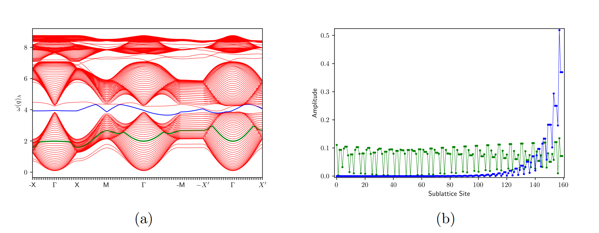

[110] slab Spin wave spectrum with J=-1, D=0.3, K=-0.3 with Field strength B=0.1 (a):along [100] (b):along [110] (c):along [111]. (d, e, f):Corresponding Reciprocity Rq plot over SBZ. The data is for 40 layers.
The figure on (b) shows the wave function amplitude corresponding to the selected bands on (a). The choosen q value is q=0 for the plotting. The blue color corresponds to edge state. The data is for 40 layers.